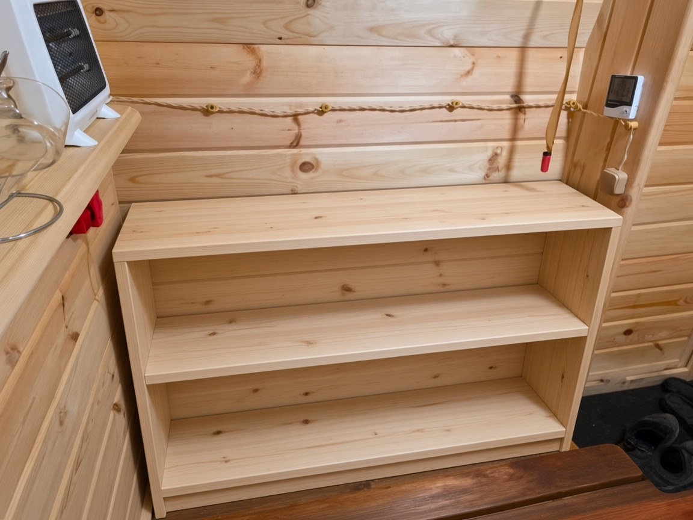
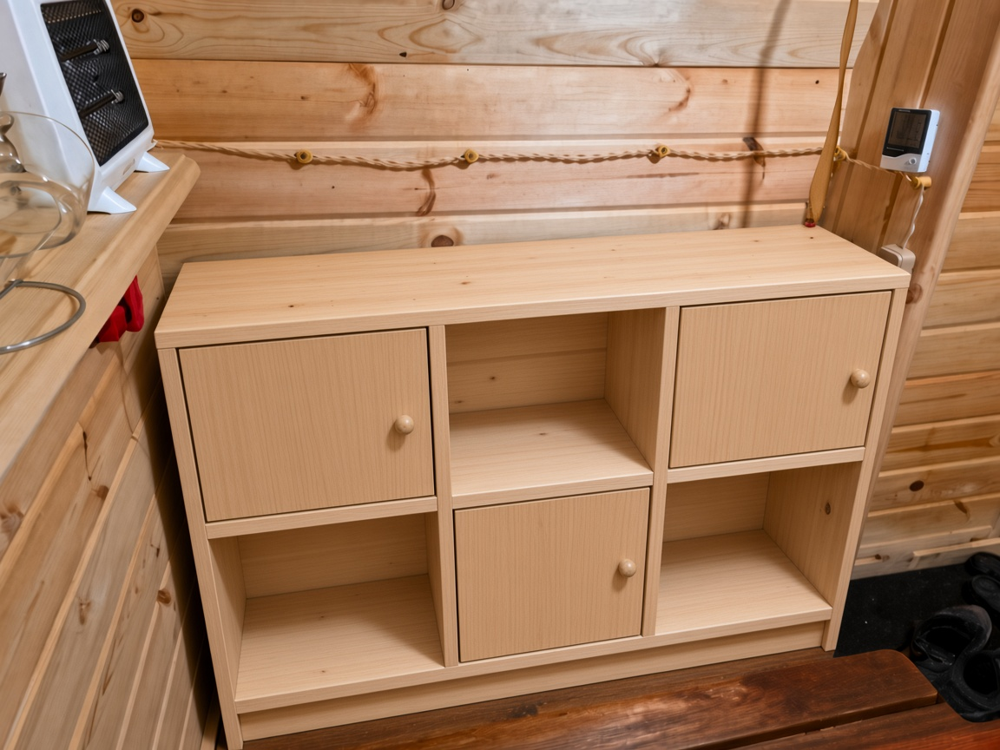
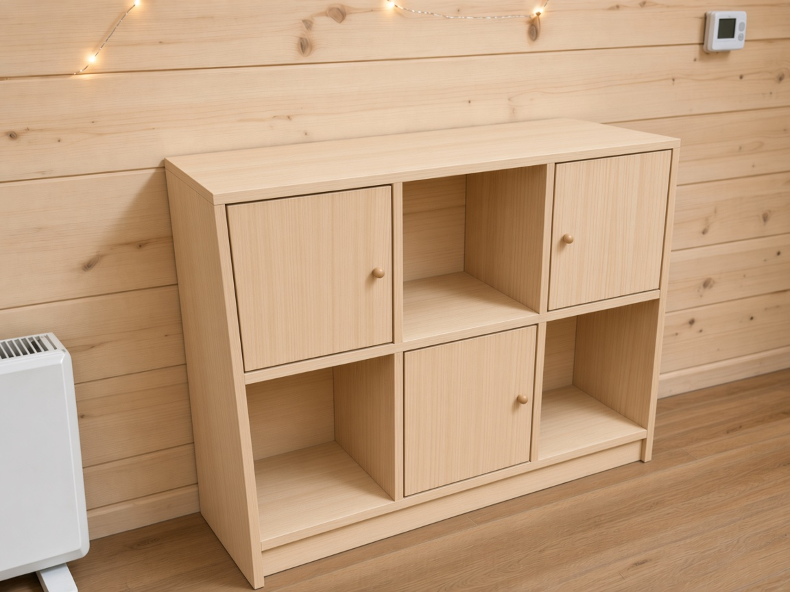

Первое приближение · под заказ
Четыре варианта из липы в цвет стены: открытые полки, шесть ячеек, тумба с дверками и шесть ячеек с низом под обувь. Размеры со скрина, скос глубины уже заложен.
Крутите модель мышью, колёсико приближает. На виде слева виден скос: сверху глубже, снизу уже.

Эскиз цвета в этой нише. Точная геометрия и размеры — на чертеже и в модели выше. Скос на фото почти не читается анфас, он задан на виде слева.

Вид спереди, чтобы сравнивать варианты. Ручка справа на дверке: ножка около 1 см в диаметре и 3–4 см высотой. Дверки на левой верхней, правой верхней и нижней центральной ячейках.

Тот же вариант сбоку: верх уходит в стену на 30 см, низ только на 22 см. Передняя кромка вертикальная, задняя идёт наискось.